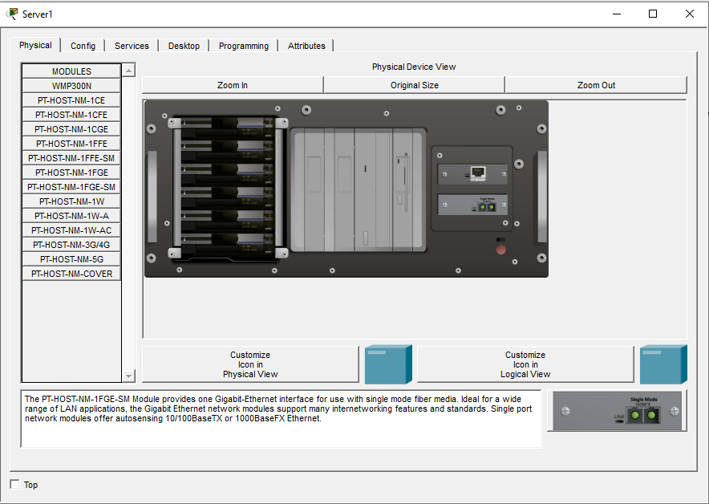

Szerver fizikális felülete
Szerver a CISCO Packet Tracerbe
Packet Tracerben található szerverek nemcsak szolgáltatásokat biztosítanak, hanem a hálózat működésének központi elemei, amelyek a kliensgépek kiszolgálását és a hálózati folyamatok automatizálását teszik lehetővé. A szerverek egy központi operációs rendszerrel működnek, amelyben különböző modulok kapcsolhatók be vagy ki (DHCP, DNS, HTTP, FTP stb.), így egyetlen eszköz több hálózati szerepet is elláthat. A szerverek képesek adatok tárolására, weboldalak kiszolgálására, felhasználók kezelésére, levelezés biztosítására, és gyakran ők felelnek a hálózat automatizált működéséért (pl. IP‑cím kiosztás, névfeloldás).